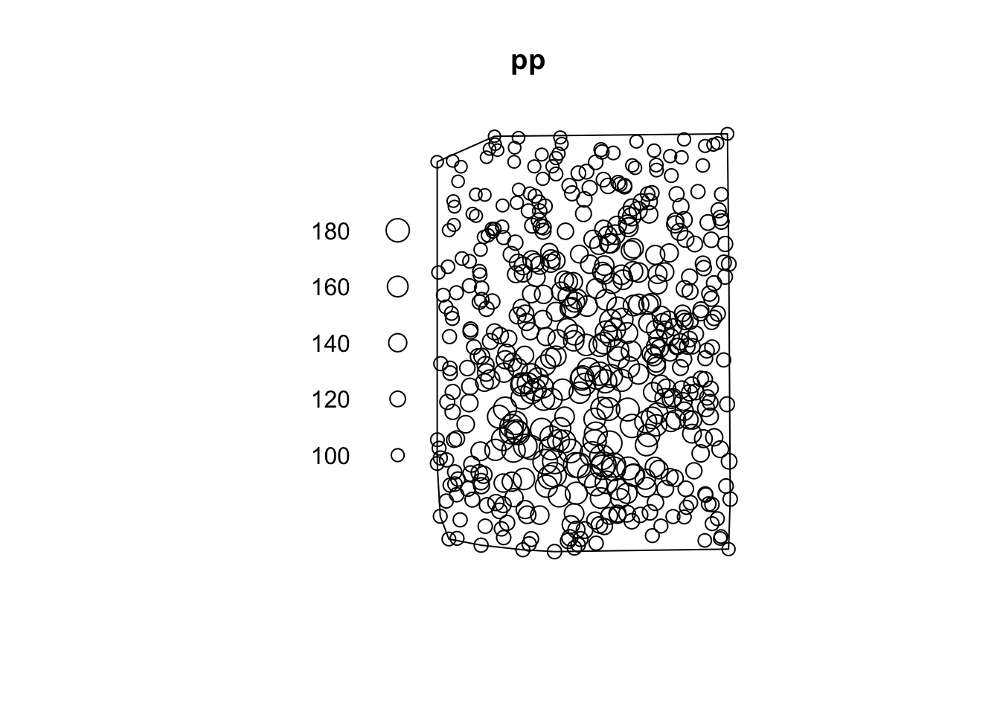

library(sf)
library(dplyr)
library(tmap)
library(spatstat)
library(terra)Libraries
Libraries are the usual suspects plus spatstat (duh) and maptools for some extra conversions. We also need terra for the data prep.
Introduction
As is often the case there is useful functionality in a package that doesn’t play nice with the core R-spatial packages. spatstat is really great for lots of things, but does not support sf and even needs a bit of persuading to handle sp data. Its implementation of IDW interpolation is nice however, so it’s nice to know how to use it. Whether or not you should ever use IDW is another question altogether, but we can worry about that some other time.
Data
First we need a set of values to interpolate. I made a projected version of the R core dataset volcano which is a nice place to start.
maungawhau <- rast("maungawhau.tif")Some random control points and a study area
We can get a dataframe of random points on the surface using terra::spatSample. We’ll make this into a sf object as a starting point because that’s the most likely situation when you want to interpolate data (you will have an sf source).
pts <- maungawhau |>
spatSample(500, xy = TRUE) |>
st_as_sf(coords = c("x", "y")) |>
st_set_crs(2193) |>
st_jitter(5)We also need a spatial extent for the interpolation, so let’s just make a convex hull of the points
spatial_extent <- pts |>
st_union() |>
st_convex_hull() |>
st_sf()And just to see where we are at
tm_shape(maungawhau) +
tm_raster() +
tm_shape(pts) +
tm_dots() +
tm_shape(spatial_extent) +
tm_borders() +
tm_layout(legend.outside = TRUE)
Make the data into a spatstat point pattern
spatstat has its own format for point patterns, including coordinates, marks (the values) and a window or owin (the spatial extent). It’s best to make the window first and then we can make the whole thing all at once. spatstat prefers sp objects, so we go via ‘Spatial’ to get a spatstat::owin object. maptools provides the conversion to an owin.
W <- spatial_extent |>
as.owin()We also need the control point coordinates
xy <- pts |>
st_coordinates() |>
as_tibble()Now we can make a spatstat::ppp point pattern
pp <- ppp(x = xy$X, xy$Y, marks = pts$maungawhau, window = W)
plot(pp)
Success!
A previous notebook showed an even quicker way to do this, but where the window will be formed from a bounding box (and where’s the fun in that?)
pts %>%
as("Spatial") %>%
as.ppp()Interpolation
It’s easy from here. power is the inverse power applied to distances, and eps is the resolution in units of the coordinate system.
result <- idw(pp, power = 2, eps = 10)
plot(result)
This is readily converted back to a terra raster for comparison with the original surface.
interpolation <- rast(result)
crs(interpolation) <- crs(maungawhau) # spatstat does not retain CRS information
m1 <- tm_shape(maungawhau) +
tm_raster()
m2 <- tm_shape(interpolation) +
tm_raster()
tmap_arrange(m1, m2)
Like I said, IDW is not necessarily a great interpolation method!